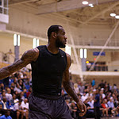
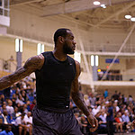

Csapat
Poszt
Mezszám
Magasság
Tömeg
| Csapat | Miami Heat |
 ; ;
; ; ;
;
LeBron Raymone James (Akron, Ohio, 1984. december 30.) amerikai profi kosárlabdázó, aki az észak-amerikai kosárlabda-bajnokságban, a Miami Heatben játszik. Jamest gyakran nevezik King Jamesnek, a nemzetközi média az NBA jelenlegi legnagyobb sztárjaként tartja számon középiskolai évei óta. James a St. Vincent - St. Mary középiskolában eltöltött évei alatt háromszor nyerte el Ohio Mr. Kosárlabda címét. A legutóbbi két NBA-szezon MVP-je, azaz legjobb játékosa lett.
2003-ban, 18 évesen a NBA-draft első válaszottjaként a Cleveland csapatához került, és még NBA-beli debütálása előtt egy 100 millió dolláros cipőszerződést kötött a Nike-val. LeBron számos legfiatalabb játékos rekordot tart. Első szezonja alatt elnyerte az NBA Az év újonca címet, a következő négy évben az All-NBA és az All-Star elismeréseket is magáénak tudhatta. James csapatát, a Cavalierst a playoffig vezette 2006-ban, 2007-ben, 2008-ban, 2009-ben és 2010-ben is. 2007-ben 15 éves szünet után segítségével a Cleveland a konferencia döntőjéig, és az NBA nagydöntőjéig jutott. Karrierjének az előző szezonokban és rájátszásokban produkált pontdobó átlaga az NBA történetének ötödik legjobbja.
James hivatalosan kiscsatár, de gyakran bedobócsatárként is játszik jó dobóteljesítménye miatt. Az USA kosárlabda-válogatottjának is tagja, a 2004-es olimpián kosárlabdában bronzérmet, 2008-ban aranyérmet nyert. 2006-ban és 2008-ban az NBA All-Star Game MVP-jévé választották.
2010. július 1-jén James Free Agent lett (azaz szabadon igazolható játékos) és bejelentette, hogy 23-as számról 6-osra vált. Július 9-én a Miami Heat csapatához szerződött, ahol csatlakozott Dwayne Wade-hez és Chris Bosh-hoz.